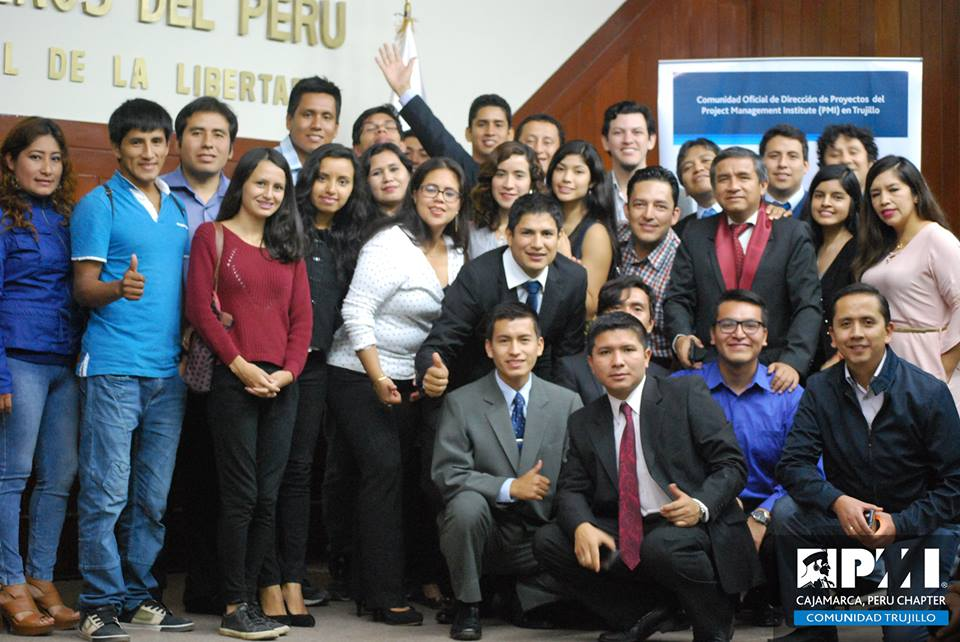

Construya una red profesional
Construya su red profesional forjando relaciones duraderas con miles de voluntarios y profesionales de PMI en todo el mundo./p>
La gestión de proyectos es una competencia crítica que tiene una influencia positiva en los resultados de la organización y la sociedad
Avanza tus habilidades de liderazgo. Ya seas nuevo como voluntario o veterano experimentado, mejora tus habilidades de liderazgo usando nuestros recursos disponibles para los voluntarios.
Consulte las opciones de membresía que tenemos para profesionales, estudiantes y jubilados. El plan de facturación grupal está disponible para organizaciones y universidades.
Explore las últimas ideas y piense en temas clave de gestión de proyectos.
Escuche a los líderes de la industria y profundice en las áreas que impactan
en nuestra profesión.
Mejore su conjunto de habilidades, aumente su valor para su organización y mejore sus perspectivas de carrera a través de nuestras oportunidades de capacitación en persona y en línea, y más. Explore la capacitación y el desarrollo.
Construya una red profesional
Construya su red profesional forjando relaciones duraderas con miles de voluntarios y profesionales de PMI en todo el mundo./p>
Carreras
Encuentre un trabajo, prepárese para próximas entrevistas, obtenga conocimiento, recursos y conocimientos para potenciar su carrera.
Ganá habilidades y experiencias
Desarrollate como un líder
Certificaciones
Demuestre sus logros
Todas las certificaciones de PMI requieren que cumplas niveles de experiencia en el dominio, niveles educativos o ambos antes de presentar tu solicitud. Deberá proporcionarnos los detalles de esta experiencia y/o educación, por lo que es mejor recopilar y preparar esta información antes de abrir la aplicación.
¿Pensando en ser voluntario?
¡Solo hazlo!
El voluntariado con PMI puede proporcionarle experiencias adicionales y habilidades de liderazgo que quizás no encuentre en su trabajo.
El voluntariado con PMI puede brindarle oportunidades que le permitan compartir conocimientos y experiencia con otros profesionales de proyectos de todo el mundo.
El voluntariado con PMI puede proporcionarle una perspectiva global de cómo los gerentes de proyectos trabajan en diversas industrias y diferentes culturas de todo el mundo.
